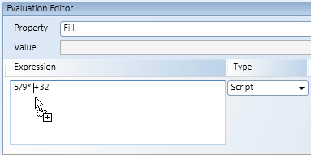
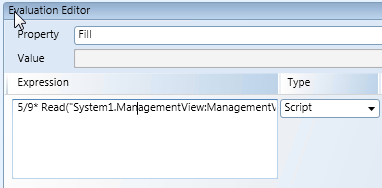
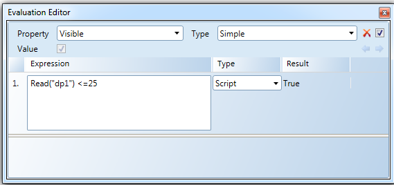
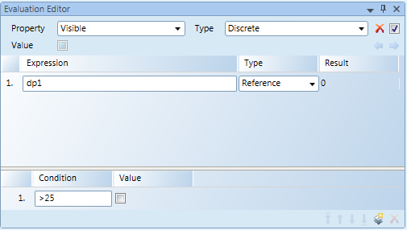
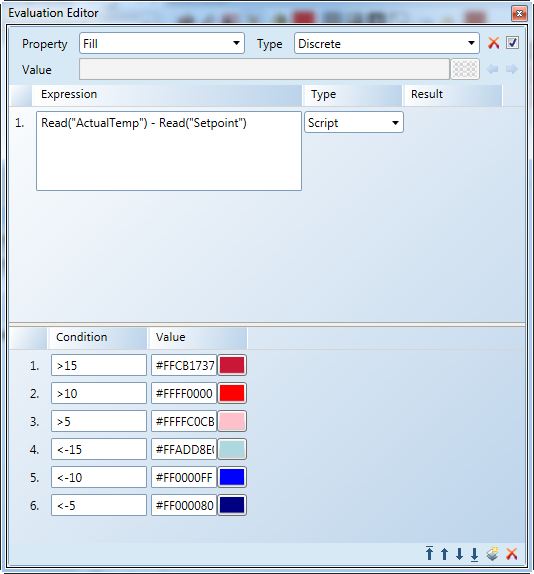
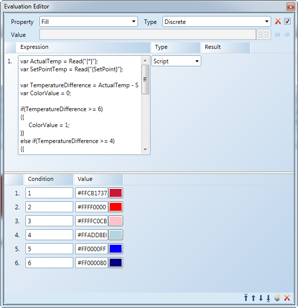
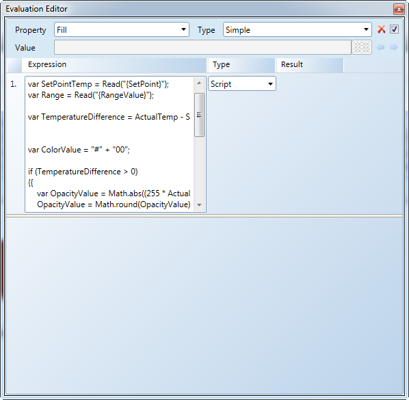

Scripts in Graphics
The Evaluation Editor allows you to create expressions based on the calculations and results of multiple data points or properties. These expressions are created when you select Script from the Type drop-down menu in the Expression area of the editor. You can also apply the calculations to the Condition field. The Script expressions use the JavaScript syntax based on the ECMA standard for JavaScript (Standard ECMA-262 5.1 Edition).
The Read, ReadCnsDescription, and Trace methods statements are specifically created to work with the system:
- The Read method allows you to obtain the current value of the specified data point.
- The ReadCndDescription method allows you to obtain the current description of the specified data point.
- The Trace method lets you log a trace message to the trace channel Graphics.Scripting module. To view these graphic scripting related trace messages, you must enable the Trace module in the Trace Viewer application.
Script expressions are helpful when creating graphics that display changing values, like a sensor, or for displaying positive and negative room pressure. You can also use the Script feature to create an expression for a floor plan that changes color based on how far the zone temperature is from the setpoint. For script examples, see Script Scenario.
Local Variables and Functions Applied Globally
All graphic scripts within the same System Manager use the same script engine. This means that all local variables and functions actually have the same global scope.
Example: A graphic contains two text elements:
Text Element One - Script: var x=3; x;
Text Element Two - Script: var y=x+1; y;
A possible outcome for the value of the text element scripts are: 3 for text element one, and 4 for text element two. However, the resulting values depend on the order the scripts are executed and that cannot be determined. The next time text element two script runs, the outcome for the value could show an error stating x is not defined.

NOTE:
Using variables in a script is not an issue, even when two scripts on the same graphic use the same variable name. Scripts are not interrupted by other scripts; therefore, for the execution time the variable remains untouched.
Basic Rules about Variables and Identifiers
A variable in programming and JavaScript acts as a storage area for a value. All variables must be identified with unique names within your script. These unique names are called identifiers.
Below are a few rules for constructing names for variables and their unique identifiers.
- Can contain letters, digits, underscores (_), and dollar signs ($)
- Must begin with a letter
- Can also begin with $ and _
- Are case sensitive
- Cannot have spaces
Script Expressions Requirements
- JavaScript objects are strings, numbers, math operators, arrays, and so on.
- The expressions support the following operators: +, -, *, /, %, ++ and –, in addition to common operations like math.abs(),math.max(), math.min(), math.sqrt(), math.average(), and math.sum(), etc.
- A Script expression is evaluated when a graphic is loaded, or a data point value changes.
- You can drag a data point reference from System Browser to any space in the Script field. When you drag a data point reference, it is automatically inserted with the Read method. See the section on Read() Drag-and-Drop.
- Do not use global data in a script without declaring and initializing the data in the same script.
- Script syntax errors are indicated by a red frame around the Expression field and a tooltip displaying the actual error. A warning trace message is also logged.
Script Reference Tables
The tables below provide a brief overview of some of the expressions you can write using the Script feature. Refer to these tables when creating your own scripts.
Read Method
The Read, ReadCnsDescription, and Trace methods are three statements specifically created to work with the system. The Read method allows you to obtain the current value of the specified data point; the ReadCnsDescription allows you to obtain the current value of the specified data point; and the Trace method lets you log a trace message to the trace channel Graphics.Scripting module. To view these graphic scripting related trace messages, you must enable the Trace module in the Trace Viewer application.
Read Method | |
Expression | Result |
Read("System1.LogicalView:Logical.Site'AS01.B.Ahu10.FanSu;") | Displays the current value of the data point. |
Read("{*}") | Displays the value of the object reference. |
Read("System1.LogicalView:Logical.Site'AS01.B.Ahu10.FanSu;.Value") - Read("System1.LogicalView:Logical.Site'AS01.B.Ahu10.FanSu;.SetPoint") | Displays the difference between the two properties of the data point. |
(Read("System1.LogicalView:Logical.Site'AS01.A;.Value") + | Displays the average value between the two properties. |
Read() Drag-and-Drop Support
You can drag a data point reference from System Browser to anywhere in the multiline Script field. It is automatically inserted with the Read()-method, unless you press the SHIFT key.
The figure below displays dragging a data point reference into the Evaluation Editor Expression field for a script evaluation.

Resulting in the read method directly applied to the dropped data point:

? Operator in the Read Method
In the Read method, the question mark operator (?) can be used as part of the data point designation. If at least one designation ends with a question mark - then the element is hidden if a data point referenced by the current Read method does not exist. See the last example in the table below.
? in the Read Method | |
Expression | Result |
Read("System1.LogicalView:Logical.Site'AS01.B.Ahu10.FanSu;?-1") | The current value of the data point, if it exists. 1 - This displays if the data point does not exist. |
Read("System1.LogicalView:Logical.Site'AS01.B.Ahu10.FanSu;?") | The current value of the data point, if it exists. The element on the canvas is hidden, if the data point does not exist. |
Read("{*dp1}?{*dp2}?99") | Expression in a symbol: Returns the value of data point 1 or data point 2 99. This displays if neither data point nor property exists. |
Read("xyz?dp1") + Read("xyz?abc?4") | The value of data point 1 + 4 |
Read("dp1?") + Read("xyz") | Null. The element is hidden, even if data point 2 exists. |
ReadCnsDescription Method
The ReadCnsDescription method returns the current description of the specified data point when the data point path is enclosed in parentheses. In this case the specified data point is a string. In Expressions, all strings must be enclosed in quotation marks (“ “). It is important to use quotation marks because data point designations can already contain single quotes (’).
NOTE: In the Text Properties view, the Text type property must be set to: Raw Value.The data point must be online. If the data point is offline (#COM) the data point is not processed in the script.
The description is dynamically updated based on the view the data point is located in. Therefore, the description returned for a data point may vary.
ReadCnsDescription Method | |
Expression | Result |
ReadCnsDescription("System1.LogicalView:Logical.Site'AS01.B.Ahu10.FanSu;") | Displays the current description of the data point. |
ReadCnsDescription("{*}") | Displays the description of the object reference. |
ReadCnsDescription ("System1.LogicalView:Logical.Site'AS01.B.Ahu10.FanSu;.Value") + ReadCnsDescription ("System1.LogicalView:Logical.Site'AS01.B.Ahu10.FanSu;.SetPoint") | Displays the concatenation of the two or more properties of the data point. NOTE: You can only add (+) strings together; you cannot use the (-) subtraction operator. |
? Operator in the ReadCnsDescription Method
In the ReadCnsDescription method, the question mark operator (?) can be used as part of the data point designation. If at least one designation ends with a question mark - then the element is hidden if a data point referenced by the current ReadCndDescription method does not exist. See the last example in the table below.
? in the ReadCnsDescription Method | |
Expression | Method Result |
ReadCnsDescription("System1.LogicalView:Logical.Site'AS01.B.Ahu10.FanSu;?-1") | The current description of the data point, if it exists. 1 - This displays if the data point does not exist. |
ReadCnsDescription ("System1.LogicalView:Logical.Site'AS01.B.Ahu10.FanSu;?") | The current description of the data point, if it exists. The element on the canvas is hidden, if the data point does not exist. |
ReadCnsDescription ("{*dp1}?{*dp2}?99") | Expression in a symbol: Returns the description of data point 1 or data point 2 99 displays if neither data point nor property exists. |
ReadCnsDescription("xyz?dp1") + Read("xyz?abc?4") | The description of data point 1 concatenated with the Read result. |
ReadCnsDescription("dp1?") + Read("xyz") | Null. The element is hidden, even if data point 2 exists. |
Trace Method
The Graphic.Scripting channel must be enabled in the Trace Viewer application for the Trace method to work. Refer to the Help section of the Trace Viewer for more information on enabling a trace channel.
Trace Method | |
Expression | Result |
var x = 1 +2; Trace("Value is " + x); | 3 and the string Value is 3 is logged under Message Text in the Trace Viewer |
Common JavaScript Examples
The table below provides you with common JavaScript examples. Note that the "//" is not a part of the syntax. In JavaScript "//" indicates a comment.
Common JavaScript Examples: | |
Expression | Result |
| 3 |
| 15 |
| 2 |
| 1.5 |
| 6 |
| 2 |
| 3 |
| 1 |
| "B.3" |
Type Conversion
The Type Conversion | |
Expression | Result |
| True. Same as: 7 > (2*3) |
| 3, because True is converted to 1 |
Braces and Substitutions
Braces are reserved for substitutions and the substitutions are resolved prior to the Script evaluation. Therefore, when a brace is part of the Script, two braces are used.
Curly Brackets\Substitutions | |
Expression | Result |
| 3 |
| Ab |
| 3 and the message |
Graphics Editor - Script vs. Reference
Executing a script is generally slower than evaluating a Reference expression. Try to limit the usage of script when possible.
The following are recommendations for librarians:
- Use scripts for symbol in a graphic. However, do not use a script if the symbol is displayed in a graphic more than 5 times, this number includes all nested symbols.
- Use scripts to remove elements from a symbol.
- Use scripts to reduce the number of substitutions, evaluations or conditions.
- Limit the number of Read() calls.
- Limit the number of if or while statements. Scripts should not be complex.
- If a task can be done with a Reference expression, use that before writing a script expression. See the Reference versus Script example.
Script vs. Reference Example
In this example, the objective is to hide the element on the graphic if the value of a given data point (dp1) is larger than the value of 25. The element property Visible receives the evaluation of the expression and depending on the value of the data point, the element is either visible on the graphic or not.
The first example illustrates a Script expression for this scenario.

And, below, is the same evaluation, however, a straightforward Reference expression is used instead.

In this example, the Reference expression is more efficient than a Script expression.
Graphics Editor - Script Timeout
All scripts within the same System Manager are executed sequentially and can slow down other graphics that also contain scripts. In order to avoid script delays or scripts blocked by scripts in other graphics, every script has a maximum running time of 4 seconds. After that, the script is stopped and returns a null, as follows:
- Text element displays:
#COM - Trace displays:
WARNING
Scripting Scenario: Changing Floor Plan Color
You can create areas of a floor plan that change color based on how far the zone temperature is from the setpoint. This is typically done by drawing a polygon, rectangle, or path element on a floor plan graphic. The Fill property color of the element is used to determine the color of the "room" based on the temperature. The Fill color changes represent a gradient blue (too cold), to white (just right), to red (too hot), depending on how it compares to the setpoint.
The following examples illustrate how you can use the Script feature in the Evaluation Editor, to create a color-changing floor plan according to the actual temperature. Multiple examples are provided to illustrate the scope of using Script with property evaluations. Example 1, the simplest evaluation of the three, is the recommended method for using script for this scenario.
The following examples illustrate how you can use the Script feature in the Evaluation Editor, to create a color-changing floor plan according to the actual temperature. Multiple examples are provided to illustrate the scope of using Script with property evaluations. Example 1, the simplest evaluation of the three, is the recommended method for using script for this scenario.
Script Example 1 (Recommended)
This is the most straightforward and simplest form of using script in an evaluation to represent a changing Fill color of an element. A Discrete type of evaluation with conditions is used. And, a script using two Read() methods is used. The script reads the actual temperature object reference and subtracts the value of the setpoint object reference. The value is examined by the evaluation, and depending on the value, the appropriate condition is chosen and the Fill color is changed.

Script Example 2
This example also uses a Discrete type of evaluation with conditions. However, the script declares and uses substitution variables in the script to determine which condition is applied to the Fill color.

|
|
|
|
| |
|
|
| |
|
|
| |
|
|
| |
|
|
| |
|
|
| |
|
|
| |
|
|
| |
|
|
| |
|
|
| |
|
|
| |
|
|
Script Example 3
This example, is a more complicated use of Script for the original scenario. In this example, a Simple evaluation type is used. Therefore, unlike the Script Examples 1 and 2, this example does not use the Condition fields. Instead, the script is used to create the hexadecimal color value for the Fill color depending on the temperature difference of the room.

|
|
|
|
| |
|
|
| |
|
|
| |
|
|
| |
|
|
| |
| |
| |
|
|
| |
|
|
|
|
|
|
|
|
|
|
|
|
|
|
|
|
|
|
|
|
|
|
| |
|
|
Related Topics
For workspace overview, Evaluation Editor View.
For related procedures, see Defining Evaluations
For an alternate workflow for changing the floor plan color, see Changing the Color of Elements Based on Event Conditions